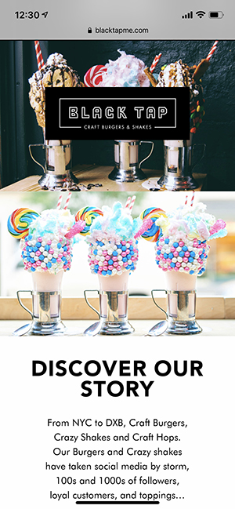
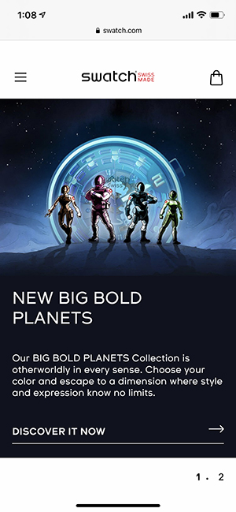
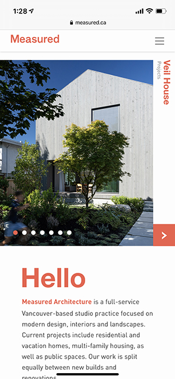

White Space and Clean Design
Black Tap Craft Burgers and Shakes
The Black Tap website uses beautiful photos with a simple black and white color scheme to emphasize their products. There is plenty of white space around the text to help the words and pictures stand out on the page. There isn't too much information and the designers let the pictures do the talking. The website looks good on both large and small viewports.
PARC-Alignment
Swatch
This page has its text aligned to the left. This helps keep the page clean and easy to read as well as directing your eye to the arrows on the left of each image. The images are also aligned to each other in groups of 3 on a big viewport and individually on a small viewport. There is one exception to this about halfway down the page where 2 pictures overlap. This change in alignment creates contrast and makes the overall page even more appealing.
PARC-Contrast
Measured Architecture
This Canadian-based architecture firm's website is a great example of using contrast in design. The white background helps the orange titles stand out as well as the dark gray body text. The photos on the page are beautiful and also demonstrate good contrast. The page isn't overcrowded and overall, is pleasing to look at.